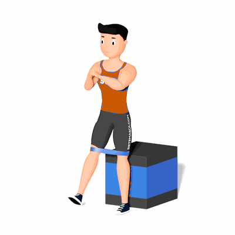

Agachamento Pistola com Faixa Elástica

Esse exercício tem como objetivo fortalecer o quadríceps e glúteos. Outro benefício é auxiliar na estabilidade do joelho, como também ajuda a evitar eventuais dores no joelho.
Ficha Técnica
Tipo: Funcional
Grupo Muscular: Perna
Aparelho: Nenhum
Músculos: Nenhum
Como realizar
- Coloque a faixa acima dos joelhos. Sente-se na beirada de um banco ou cadeira, de preferência a uma altura em que seus joelhos fiquem dobrados a 90 graus ao sentar;
- Incline ligeiramente o tronco para a frente, de modo que o peito fique na frente dos quadris;
- Em seguida, levante um pé do chão por uma polegada ou mais, e com o pé oposto firmemente plantado no chão, fique de pé sobre aquela perna até que esteja totalmente estendida;
- Retorne lentamente à posição sentada para uma repetição. Mantenha um espaço consistente na largura do quadril entre os joelhos durante todo o movimento.
 RC STORE
RC STORE